Advanced Setting:
The setting window can be open by click setting button or through the top menu bar. The texture setting and style setting are folded, click [+] to expand them.
Use the template of Google/Bing/Mapbox, the elevation an texture setting will set to a common value of the selected data source. Use the template value if you are not sure which value is able to use.
Click set to default to clear all your settings, this will not delete your API keys.
Stop and Retry:
After start loading, you can stop the loading process immediately by clicking the Stop button.
The loading state of each piece is showing down the start button.
If You Get some errors in loading, such as network problem, API key out of limitation, fix the problem and click Retry to reload the error pieces.
Combine and Save:
The mesh of terrain generated after the data loading.
They are formed as raw data in the scene, separated in pieces if the pieces of generate setting is more than one.
You can see the differences of raw data and combined mesh in the example scene 534-GalicicaNational.
Combine and Save:
The mesh of terrain generated after the data loading.
They are formed as raw data in the scene, separated in pieces if the pieces of generate setting is more than one.
You can see the differences of raw data and combined mesh in the example scene 534-GalicicaNational.
|
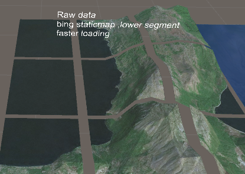
|
Drag the character Gameobject to the CharPos field, and select the layer which the pieces of terrain in. |
It takes more space to store the raw data, save them as prefab or unity terrain to keep the size of the scene file.
After the data loading , click combine to combine the pieces into a new Gameobject. The texture will be combined to a full picture file. The combined file retains the vertices texture and normal data.
※The combine and save as terrain operations run with the default setting, use the combine and save window to see more options.
The combine operation process for a bit of time ,it depends on the number of elevation data and the size of texture file.
After the combine operation, the combined mesh can be saved as a prefab.
If you have not created the terrain completely in one time, you may receive some warning when you combine the meshes. You can go on combine them if you are satisfied with the result data.
※if the total number of vertices is greater than 65535, the mesh CANNOT be combined. It can be saved as terrain only.
Click save as terrain to save the raw data to a unity terrain file. The terrain file retains the texture and more smooth than the mesh terrain. The process of texture combine also takes time, please wait patiently.
See the differences between unity terrain and combined mesh in the example scene Olympic National Park.
|
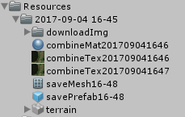
|
All the saved files in the Resources/system data directory. |
Combine and Save Window:
if you open an existing scene and want to combine the pre loaded raw data, open the Combine and Save window through top menu bar.
|
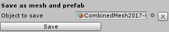
|
Drag or select the combined Gameobject to the source object field and click save. |
|
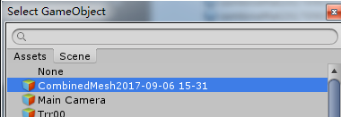
|
it will save as a prefab, including the mesh and texture. You can use [x] button to clear the field. |
|
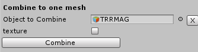
|
Drag or select the raw data Gameobject to the source object field (must be the parent object), check the texture box and the texture will be combined. If the texture box is unchecked, it will only combine the mesh. |
|
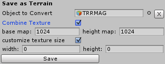
|
while saving terrain ,you can also check or uncheck the texture box. |
check the customize texture size box, two options of width and height will show up. If they are set to zero, the texture file will use the maximum size of the downloaded texture.
※the texture file of a combined mesh and terrain is not same. The texture of combined mesh follows the Mercator projection ,it retains most data of the downloaded files.
Data Source:
In the 2.0 version of RTM, you can use Google and Bing map service as the source of data. In v2.2 you can also use a Mapbox data..
1. The elevation and image of static maps have some difference in the two sources.
You can see the differences of static maps in the example scene 534-GalicicaNational.
2. The time the download processes take could be different with the two data source. It depends on your network condition.
3. Google and Bing map services have some limitations for their API users.

https://msdn.microsoft.com/en-us/library/ff701724.aspx and https://www.microsoft.com/en-us/maps/licensing/options
https://developers.google.com/maps/pricing-and-plans/
https://www.mapbox.com/pricing/
For more details.
Random Map:
|
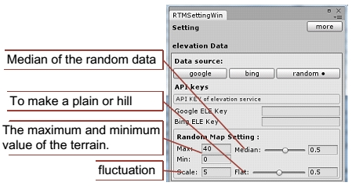
|
A new map generating tool is added to make a random map. when you select Random at setting/datasource panel, some options will show below. |
|
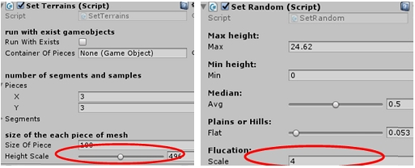
|
The height of the generated terrain depends on the heightscale, the value of scale also affects the result. When the random value exceeds the max and min value, it will be set to a random lower/higher value. |
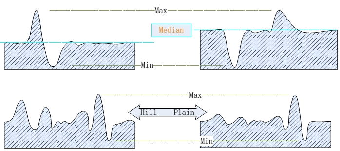
The value of flat determines the approach degrees if the median value. Set flat to 0 to make barrows or hills, set flat to 1 to make a plain.
the generated terrain with different values of flat and median.
※ Do not set the scale close to the segment x or y, it's recommended to set a value less than (segment.x or y)/ 2.
Texture Types:
Four types of texture provided.| Google Map Types: | |||
| satellite | roadmap | terrain | hybrid |
| 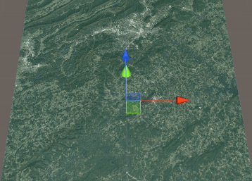 | 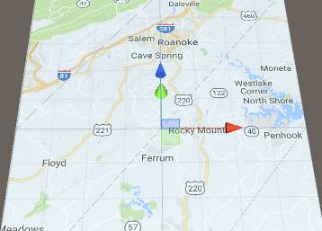 | 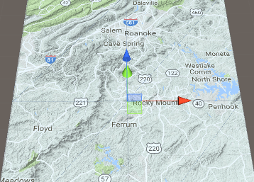 | 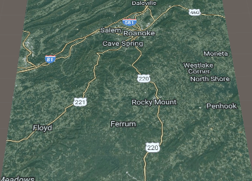 |
| Bing Map Types: | |||
| Aerial | Road | CanvasGray | AerialWithLabels |
| 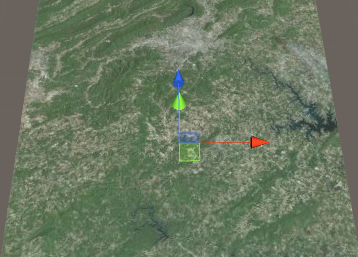 | 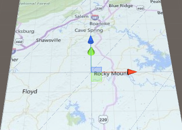 | 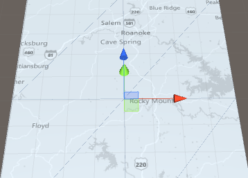 | 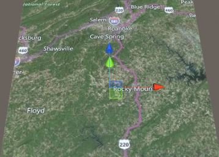 |
| Mapbox Types: | ||||
| satellite | streets | streets-satellite | outdoors | comic |
| 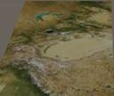 | 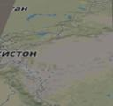 | 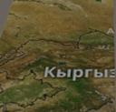 | 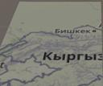 | 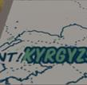 |
Texture Size:
You can choose AutoZoom or set the zoom level by yourself.
Read more about zoom level:
https://msdn.microsoft.com/en-us/library/ff701724.aspx
https://developers.google.com/maps/documentation/static-maps/intro#Zoomlevels
https://www.mapbox.com/api-documentation/pages/static_classic.html
When the Auto Zoom is checked, the zoom level will be the maximum according to the reference texture size.
There are some different selections when you use Google or Bing services.
 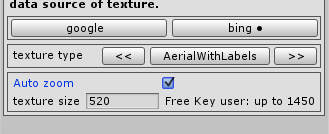 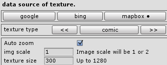 |
Google and Mapbox provide a larger image scale while loading a texture file.
Notice that there are limits for both free user and upgrade users, if the texture size, zoom level or image scale exceeds the limits, the picture downloaded might be wrong, or the download may get errors. When the Autozoom is unchecked, you can set the zoom level by yourself. |
| 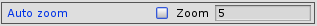 | The zoom level is an integer between 0 and 21. Some image may not be available at all zoom levels for all locations. If it is not available at a location, the download may get errors. |
Styles:
.png) |
Before start generation, you can set a default style of the terrain. |
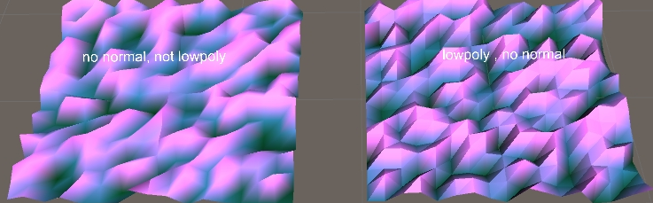
※The Lowpoly style will make the number of vertices 6 times of the mesh which is not lowpoly style. It will NOT cost more time to download data.
smooth style
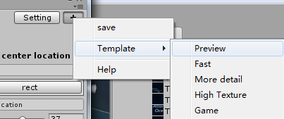
| if you generated a non-lowpoly terrain, you can smooth it right after it loading complete. | 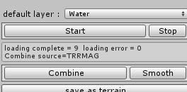 |
basic matrial
check out how the basic material looks in the example scene BasicTerrainMaterial. 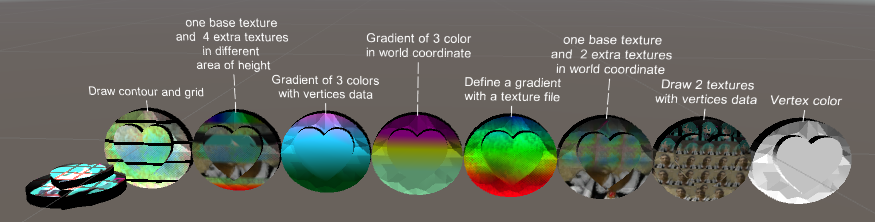
When using the Vertex Color material, the terrain will show the color you set in the Color of Mesh field.
Preview and Template:
It's usually needed to have a quick load to see whether the certain area can be generated correctly. click [+] , and select a template, the piece and segment will be set to a lower value to save time. There also provide many templates for some common setting.
Mesh Size:
| There are three ways to decide the size of terrain you are going to generate. | 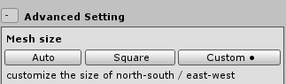 |
Square: Generate square terrain mesh.
Custom: customize the length and width of mesh.
When custom is checked, you need to define the value of both width and length.
Diagnosis Tool:
If you found RTM works not correctly, the diagnosis tool might help to find which problem you have got.The result will show what caused the incorrect work, read the Google and Bing API documents to fix it, or copy the log and send it to me.
※The log contains your API keys, it 's better to delete them before you show your log to others.※
Height Map Generate/Import:
After generating a piece of terrain, one height map picture will be saved in the texture directory.
| ※Uncheck Save-Heightmap in Advanced Setting to avoid saving files to local. |
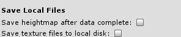 |
Use the Generate From Height Map to rebuild a mesh with a height map.
The Importer Setting of a height map must:
Non-Power of 2: none
Read/Write enabled
Warp mode: Clamp
Filter Mode: point
Remember to check the texture import settings in your unity editor when you want to use a height which is not generated by RealTerrainMaker.
Select a heightmap texture into the texture field, the segment and meshsize will be load from the texture file automatically.
You can set your own mesh size instead of the default value, x as east-west and z as north-south.
Click Get Setting to reload the default value of meshsize and height from the texture file. Click Generate to make a new mesh from the heightmap.
(This picture shows two meshes generated with the different value of height.)
In the version 2.2, you can generate terrain with a heightmap texture which is downloaded from Mapbox. Mind the value of segment x and y, the default value will the same as the texture width and height. Set segment x and y to an acceptable value before generate. The heightmap of Mapbox does not contain the meshsize and heightscale setting, it's better to use the default value and adjust the scale of Gameobject.